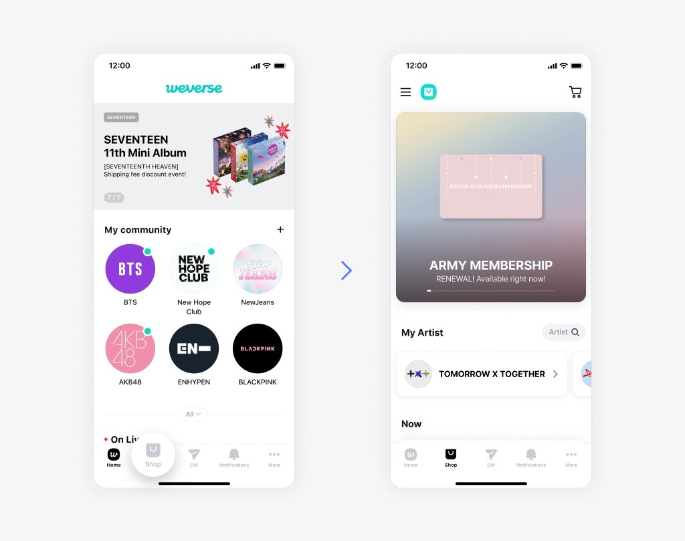
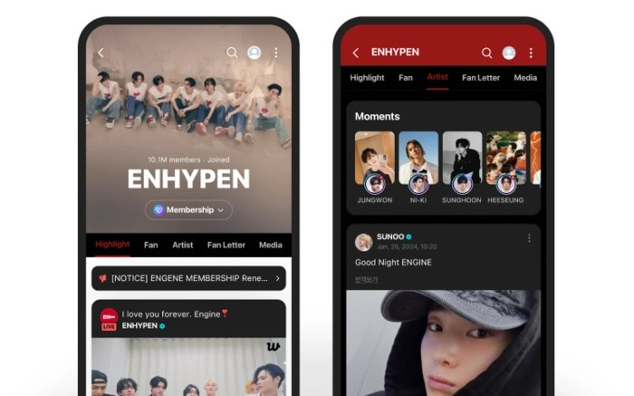
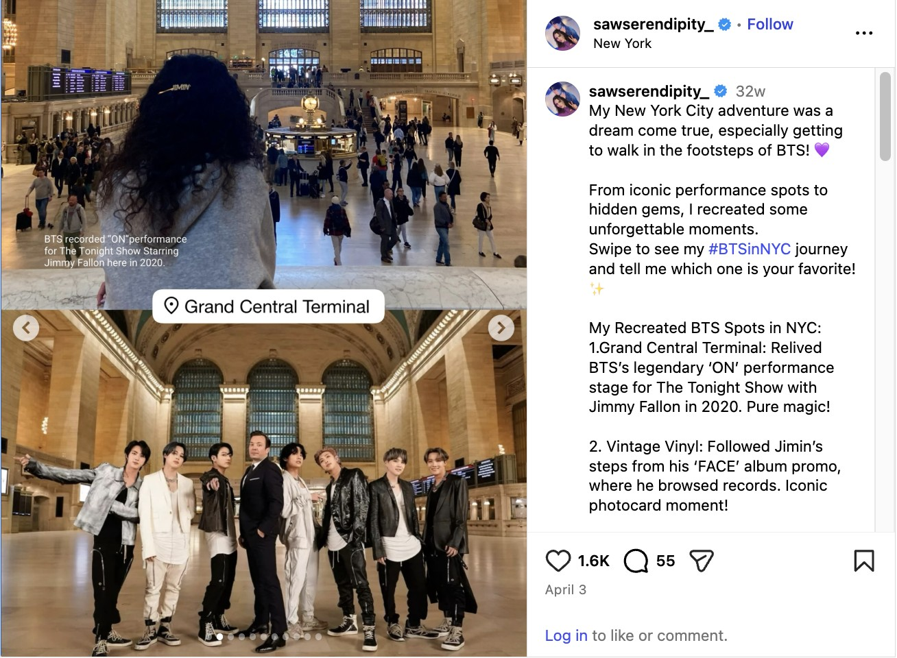
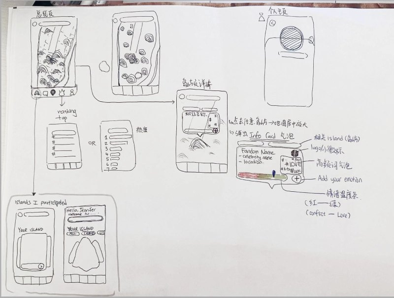
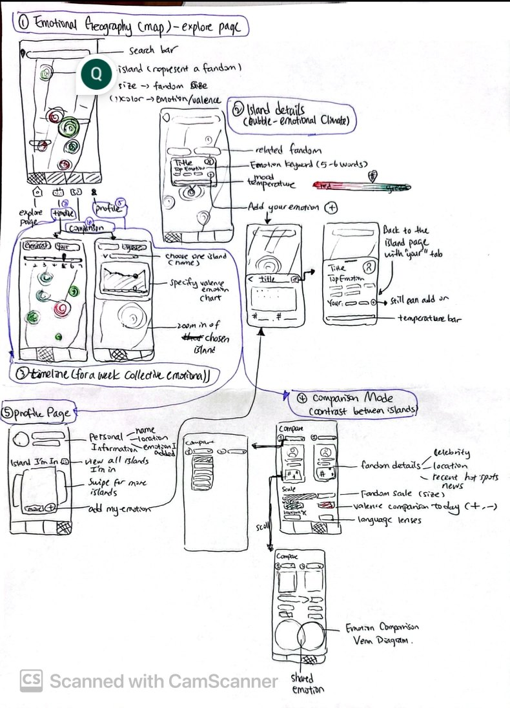
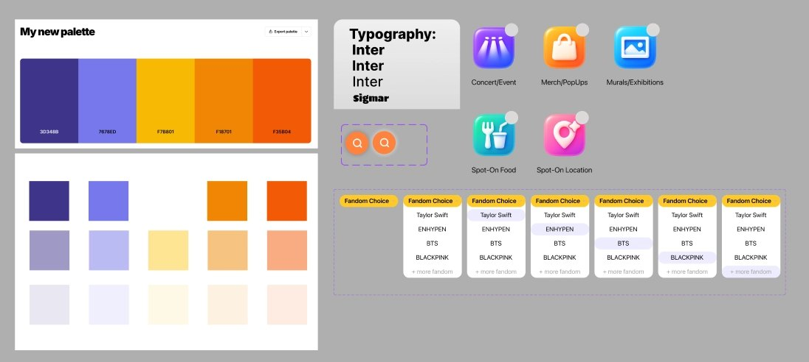
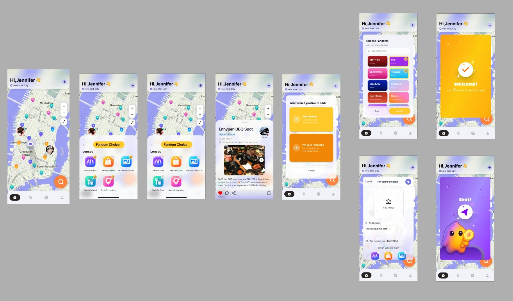
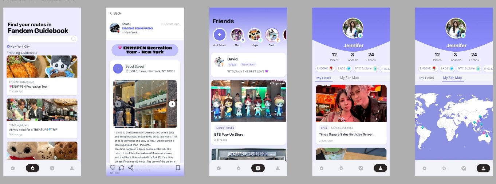
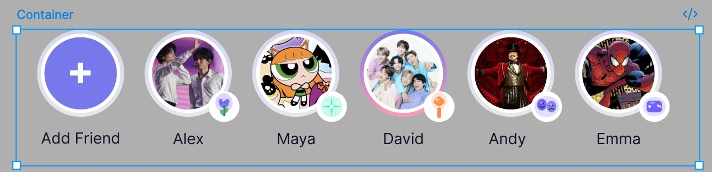
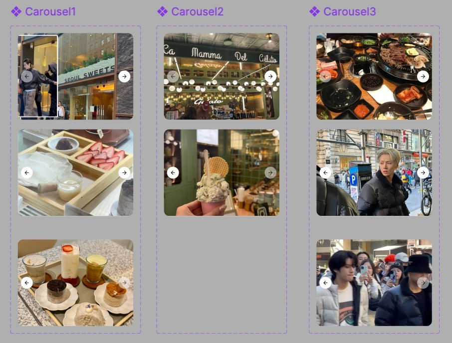

Overview
One map for every fandom place: concert sites, pop-ups, murals, idol cafés and photo spots.
Problem
Fandom places are scattered everywhere.
Fandom places are scattered across a dozen apps. Fans can't find them, or see where their community has been.
"I want to find exactly where BTS took photos at Times Square."
"Do you know where exactly the JUMP merch pop-up is in Manhattan?"
"Tired of finding fans to hang out with. I posted on TikTok and X but no one replies!"
give fans one trustworthy map of fandom places, verified by fans and filtered by lenses?
Goal
Pin meaningful places through lenses.
Target users
Constraints
Research
Competitive analysis + 9 interviews.
Competitive analysis
Weverse · Weibo · Xiaohongshu · TikTok fan guides
- Fandom communities are mostly virtual; no platform maps real-world fandom places
- Platforms amplify emotion but lose the link to real places



Semi-structured interviews
6 fans · K-pop, C-pop, Western fandoms
- Fandom journeys are spatial but poorly documented
- Fans only care about their own fandom
- Fans want to see where others pinned
→ Pins, "Select your fandom", Guidebooks

Follow-up interviews
3 fans · K-pop, Marvel, Broadway
- Fans need a reliable way to verify real spots
- Overloaded maps overwhelm; users need filtering
→ Five Lenses, Friends tab
Ideation
Three ideas I dropped, one I kept.
Unclear use; why care about other fandoms' emotions?
Too personal, weak link to place.
Duplicates existing platforms.
Filters, check-ins and guidebooks. The most direct fix for scattered location info.


Design Process
From paper to a system.
Mapped the explore page, island details, timeline and profile by hand.


What testing the sketches told me to drop.
Friendly, clear and minimal; purple for trust, orange for action.

Words a fan would actually say. No jargon.

Hover to see the words
Five lenses, two words max.

Hover to see the words
Final Design
Map as home, everything else as an overlay.

Choose a fandom → filter by lens → open a spot → pin your own

Guidebooks · Friends · My Fan Map
Testing
4 rounds with fans, classmates, ITP and Design Lab.
- Warm tone and mascot: "it's cute… the maps look really lovely"
- Map as home, features as overlays
- Lens filtering felt intuitive
- "Welcome!" and "Sent!" felt rewarding
- Why are other fandoms' pins showing?
- Friend page showed too much personal info
- Likes and sharing were unclear
- Full-page navigation lost context
Iterations
Hides irrelevant fandom pins.

Clearer icons, animated with variables.

Only pins, fandom badges and a signature.

Users stay anchored to the map.

Reflection
Fun and function, together.
Users want emotion and function at once; the interface has to feel fun while solving a real problem.
Clear map logic (fandom choice, lenses) is essential; users expect instant feedback.
Fans read UI symbolically: icon shape, color and microcopy shape trust.
Figma skills I built


Next